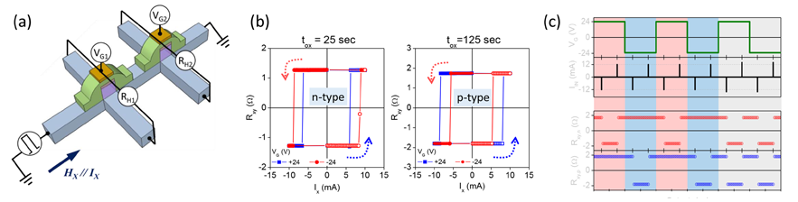

KAIST Top 10
KAIST Top 10
KAIST RESEARCH ACHIEVEMENTS
Development of Reconfigurable Spin-based Logic Device
Department of Materials Science and Engineering
Byong-Guk Park
Summary
Current computing technology is based on the von Neumann architecture, which consists of a processing unit (PU) for performing logic operations and a memory for storing information. As the PU and memory are physically separated, data transfer between the two components requires substantial energy consumption and time delay. This so-called von Neumann bottleneck causes serious problems for state-of-the-art computing technology, particularly for large-capacity information processing such as artificial intelligence (AI), internet of things (IoT), and big-data analytics. In this study, we developed a spin logic device by employing electric-field-controlled spin-orbit torque switching, which simultaneously performs logic and memory functions.
Background
Moreover, by tuning the polarity of the electric-field effect, we realized both “n-type” and “p-type” spin logic devices for the first time and demonstrated complementary logic operations. This paves the way for the development of non-volatile and reconfigurable logic devices, which can overcome the challenges of conventional semiconductor-based devices such as the von Neumann bottleneck or the physical limits of miniaturization.
 Fig. 1. Computer structure. (a) Current von Neumann structure, in which logic and memory are spatially separated (b) Spin-logic device
Fig. 1. Computer structure. (a) Current von Neumann structure, in which logic and memory are spatially separated (b) Spin-logic device
Background: Next-generation semiconductor materials technology
Modern computing technology is based on the von Neumann architecture, which involves spatially separated processors and memories (Figure 1a). Data transfer between the components results in substantial power consumption and signal delay, and volatile characteristics mean a continuous power supply for information retention is required. Therefore, in order to continually enhance the performance of computing technology, the reduction of power consumption should first be achieved together with the scaling of device size. One method of solving this critical problem involves introducing logic-in-memory devices that simultaneously perform logic and memory functions (Figure 1b), enabling nonvolatile and programmable logic devices. Spintronics is a research field that develops new electronic devices using two fundamental properties of electrons: charge and spin. Magnetic random access memory (MRAM) is a notable example of a spintronic device that has non-volatile and high-speed operation characteristics, and is being actively developed as next-generation memory by major semiconductor companies. Since the development of MRAM, there is increasing interest in spin-based logic devices as such devices enable reconfigurable logic or smart devices that can simultaneously function logic and memory.
 Fig. 2. Spin-based logic device. (a) Device schematic (b) Switching characteristics of “n-type” and “p-type” spin logic device (c) Complementary logic operations.
Contents: Complementary spin-based logic device
- We developed a spin logic device capable of performing complementary logic operations by controlling spin-orbit torque (SOT) switching using an electric field (Fig. 2a). SOT, which is being developed as an operation method of MRAM, has advantages for logic devices because the switching speed is approximately 10 times faster than conventional spin-transfer torque. The critical current for SOT-induced magnetization switching in perpendicularly magnetized Ta/CoFeB/MgO structures is controlled above 30% by an electric field of 5 MV/cm (Fig. 2b). This allows us to fabricate spin logic devices, demonstrating a programmable logic operation based on the gate voltage and input clock current. Moreover, the polarity of the electric field effect is controlled by engineering the oxidation state at the CoFeB/MgO interface. Therefore, we developed an “n-type” (“p-type“) device that can be easily operated in a positive (negative) electric field, enabling a complementary spin logic device (Fig. 2c). The device simulation demonstrates that our spin-based logic devices are able to increase integration capacity and reduce power consumption compared to conventional semiconductor-based devices. We engineered spin-orbit torque materials to improve the performance of spin-logic devices. In particular, we demonstrated a ferromagnet/non-magnetic interface that can generate spin current with z-spin polarization, enabling energy-efficient switching without an external magnetic field
Expected effect
The developed spin-based logic device has potential advantages for device applications as it can serve as built-in memory within a logic circuit while not requiring refreshing in quiescent mode due to its nonvolatile characteristics, which leads to a substantial reduction in power consumption. This technology can overcome the von Neumann bottleneck and be applied to neuromorphic computing. High-speed operation, the distinct feature of spin-orbit torque-based MRAM that gives rise to its non-volatility, can significantly reduce standby power when compared to SRAM. This new material is expected to accelerate the commercialization of MRAM in mobile, wearable, and IoT devices
Research Outcomes
[Paper 1] “Complementary logic operation based on electric-field controlled spin-orbit torques”, Nature Electronics 1, 398 (2018)
[Paper 2] “Spin currents and spin-orbit torques in ferromagnetic trilayers”, Nature Materials 17, 509 (2018)
[Patent] Semiconductor device and semiconductor logic device (KR-2017-0117642, 2017-0101259, US 15/723278, JP 2017-203154)
[Press release] “Development of new materials for efficient spin current generation” reported in Jungangilbo, ETnews, etc (2018.04.11.)